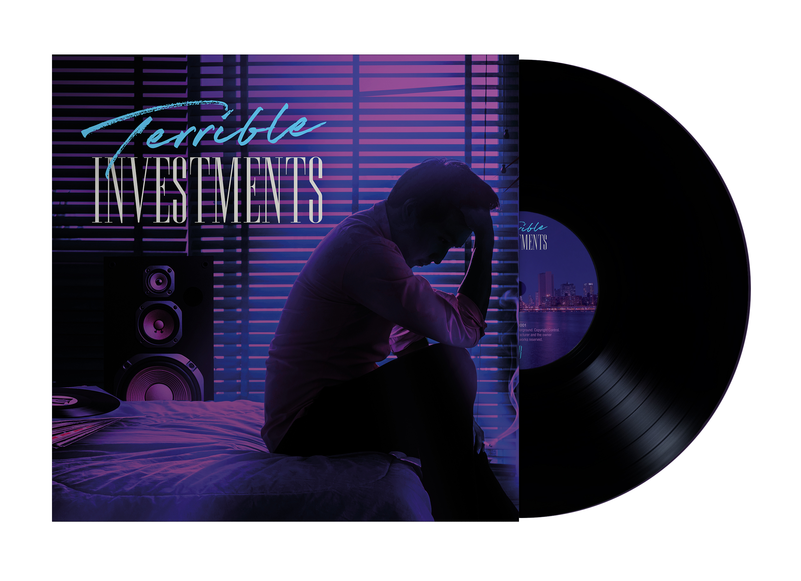

Polyphonic Underground is an informal collective of synth artists with a passion for vinyl. We came together around the idea of getting our own music released on the medium, without having to rely on a record label or any other kind of backing (or bureaucracy/red tape). This is a passion project that is completely self-funded and collaboratively produced.
We are proud to announce our new synth compilation record: Terrible Investments. Through a (mostly) democratic process, we have selected one track from each participating artist for a total of 10, some of which have not previously been released. The record comes with a full colour printed sleeve featuring artwork and graphic design from fellow synth artist L'Avenue. Each track has been meticulously mastered for vinyl by genre icon Dynatron. It's been pressed on black 140g vinyl and comes with a protective black polylined inner sleeve.
Preorders are now open on the individual artists bandcamp pages, and will start shipping on or around May 28th. Check the list below for the artist nearest to you. Those marked TBA do not have the order page ready just yet, so check back soon to catch them when they become available.
To get the latest information about this and any future releases from Polyphonic Underground, send us an email at this address:
© 2021 Polyphonic Underground